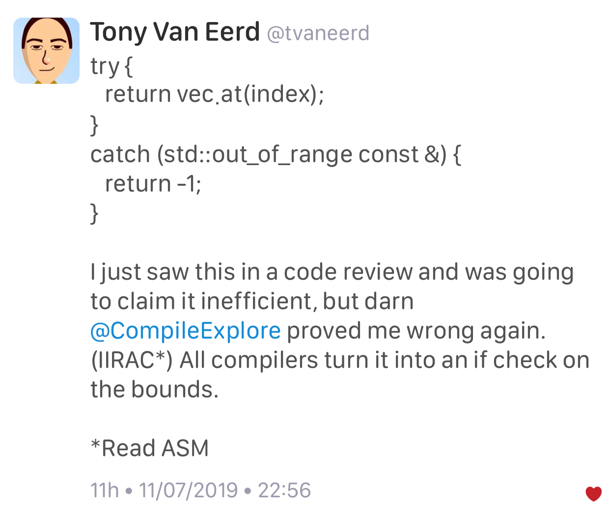

2019-09-26
https://www.reddit.com/r/cpp/comments/d87plg/cppcon_2019_herb_sutter_defragmenting_c_making/
https://www.silexica.com/news/iso_cpp_meeting_2019/
https://devblogs.microsoft.com/oldnewthing/20190830-00/?p=102823
https://blog.magnum.graphics/announcements/introducing-python-bindings/
https://github.com/pybind/pybind11
https://www.reddit.com/r/cpp/comments/d0hguz/are_there_any_memory_safety_libraries_for_c/
https://github.com/duneroadrunner/SaferCPlusPlus/
https://github.com/deplinenoise/ig-memtrace
MemTrace is a memory debugging tool developed internally at Insomniac Games.
https://github.com/ivmai/bdwgc
The Boehm-Demers-Weiser conservative C/C++ Garbage Collector (libgc, bdwgc, boehm-gc) https://www.hboehm.info/gc/
Steve Downey: https://www.sdowney.org/2019/07/anyduck-a-value-type-erased-type/
https://cukic.co/2019/02/19/tmp-testing-and-debugging-templates/
